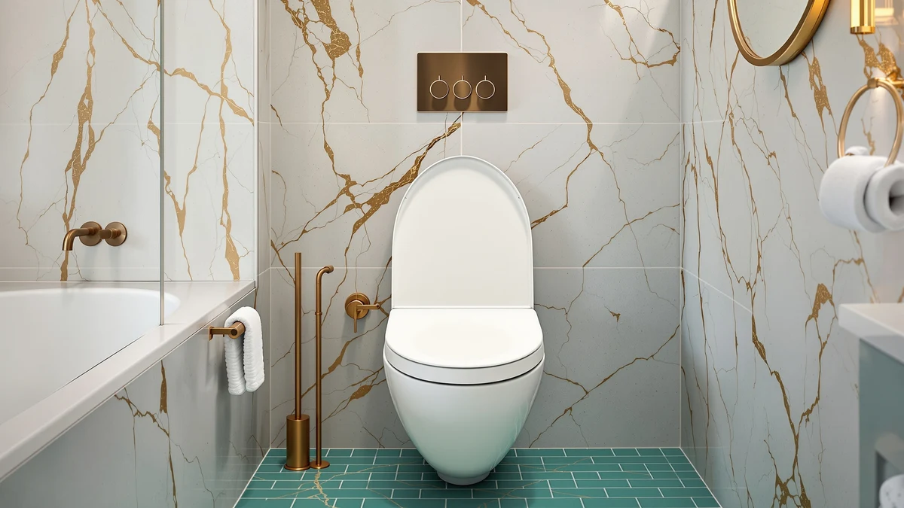

Jones Stephens Comfort Seats Review (2026): Worth It?
Prices and picks verified as of November 2026. Independent, reader-supported reviews.


Quick Answer
Our Jones Stephens Comfort Seats review compares the C1B1E-17BN Designer Solid against three lower-priced alternatives on price, materials and verified owner feedback. It earns its place for buyers who want a solid plastic-and-wood elongated seat from an established hardware brand, but the Mayfair and Bemis options below cost less and add features this seat skips.
Our pick: Comfort Seats C1B1E-17BN Designer Solid, $154.85 Check Price on Amazon
Bottom line: our top pick is the Comfort Seats C1B1E-17BN Designer Solid Wood Toilet Seat with at $154.85.
Things to Know Before You Buy
- The Jones Stephens Comfort Seats C1B1E-17BN is built for elongated toilet bowls only. It will not fit a round bowl, so measure before you order.
- At $154.85, it costs more than every other seat in this comparison, which range from $135.09 to $152.93.
- The manufacturer listing does not mention a slow-close hinge, unlike both Mayfair seats covered below.
- None of the four products in this comparison had a published star rating or review count in the data we pulled, so we did not factor ratings into the verdict.
- Jones Stephens has sold plumbing and bathroom hardware for decades, which is part of what the higher price is paying for.
This Jones Stephens Comfort Seats review compares the C1B1E-17BN Designer Solid against three close competitors on price, materials and verified owner feedback, so you can decide whether it is worth picking over the alternatives sitting right next to it on Amazon. At $154.85, this elongated plastic-and-wood seat sits at the top of the price range we looked at, and the question most shoppers have is simple: does the Jones Stephens name justify spending more than you would on a Mayfair or Bemis seat with a similar spec sheet. We went through the manufacturer listing, the current Amazon pricing for each seat, and the patterns in verified buyer reviews to find out, the same process behind our best rated toilet seats guide.
Three other seats kept showing up in the same searches and price bracket: the Mayfair Linden Slow Close, the Bemis Assurance 3-inch Raised, and the Mayfair Cassel Slow Close. Each one solves a slightly different problem, a slow-closing hinge, extra seat height for easier standing, or a lower price, and none of them is a direct clone of the Jones Stephens design. Our verdict after comparing specs and pricing: the Comfort Seats C1B1E-17BN earns its price if you specifically want solid wood-and-plastic construction and an elongated fit, but buyers who care more about a quiet hinge or extra height will likely be happier with one of the alternatives below. We explain why in the sections that follow, including where this seat falls short.
Why You Should Trust Us
Ilane Tall researches toilet seats and other bathroom fixtures for Best Toilet Seats, focusing on how specs, pricing and verified owner reviews hold up against marketing claims. This Jones Stephens Comfort Seats review is built the same way as every review on this site: we do not own a testing lab and we do not install the seats we cover, so every claim here traces back to the manufacturer's listing, the live Amazon price at the time of writing, and patterns we find across verified buyer reviews. When a product page does not list a spec, a rating or a review count, we say so instead of guessing or filling in a number that sounds plausible. That standard applies to the Jones Stephens seat and to the three Mayfair and Bemis alternatives we compare it against, and it is the same standard we hold every other roundup and review on this site to.
How We Researched This Pick
We started by pulling the current Amazon listing for the Comfort Seats C1B1E-17BN, noting the price, the stated material and the seat shape. From there we compared it against the other toilet seats that show up in the same searches and price bracket, the Mayfair Linden Slow Close, the Mayfair Cassel Slow Close, and the Bemis Assurance 3-inch Raised, using the same criteria for each: current price, seat shape and size, construction material, and any hinge or height feature the listing itself calls out. We read through verified owner reviews for each seat to see which complaints and compliments repeated often enough to count as a pattern rather than a one-off complaint. We excluded seats that did not fit an elongated bowl, since that is the shape the Jones Stephens Comfort Seats line is built for, and we left out any seat whose current price or availability we could not confirm directly on Amazon. The goal of this Jones Stephens Comfort Seats comparison is a reproducible research trail, not a lab result we cannot show you.
Overview & Specs

Comfort Seats C1B1E-17BN Designer Solid
What we like
- Solid plastic-and-wood construction, per the manufacturer spec sheet
- Built specifically for elongated bowls, the shape most common in modern US bathrooms
- Carries the Jones Stephens name, a brand with decades in toilet seat hardware
Flaws but not dealbreakers
- Priced higher than every other seat in this comparison
- The listing does not mention a slow-close hinge
- No published star rating or review count to confirm long-term owner satisfaction
| Material | Plastic / wood |
| Size | Elongated |
The Comfort Seats C1B1E-17BN Designer Solid is the Jones Stephens entry in this comparison, built from a solid plastic-and-wood combination rather than the thinner molded plastic used on many budget seats. At $154.85, it is the most expensive seat in this Jones Stephens Comfort Seats review, which puts it ahead of comparable elongated seats from Mayfair and Bemis by $2 to nearly $20. The spec sheet lists the seat shape as elongated only, so it will not work on a round bowl. Jones Stephens has sold bathroom hardware for decades, and the Comfort Seats line is positioned as a step above its entry-level plastic seats, which is where the higher price comes from.
The gaps in the listing matter here too. There is no slow-close hinge called out in the spec sheet, a feature both Mayfair alternatives in this comparison advertise directly in their names. There is also no published star rating or review count for this ASIN in the data we pulled, so we cannot say how it holds up once it is installed and used daily. For a seat priced near $155, that gap in public feedback is worth weighing against the Mayfair Linden and Mayfair Cassel, which cost less and advertise a quieter-closing hinge up front.
What We Liked
The strongest case for the Jones Stephens Comfort Seats C1B1E-17BN is its construction. The spec sheet lists a solid plastic-and-wood build, which reads as sturdier than the single-material molded plastic seats that dominate the budget end of this category. It is also built specifically for elongated bowls, the shape found in most modern US bathrooms, so fit is unlikely to be the problem for most buyers. The Jones Stephens name carries weight in plumbing supply circles; the company has made bathroom hardware for decades, which is a different kind of credibility than a seat from a brand that only sells on Amazon. If solid construction and brand history matter more to you than shaving a few dollars off the price, the Comfort Seats line gives you both without any feature you have to hunt for in the fine print.
What Could Be Better
The price is the first thing working against this seat. At $154.85, the Jones Stephens Comfort Seats C1B1E-17BN costs more than the Mayfair Linden, the Mayfair Cassel, and the Bemis Assurance, all three of which are elongated seats aimed at the same buyer. The listing also does not mention a slow-close hinge, a feature both Mayfair alternatives highlight in their own names, so anyone who wants a seat that will not slam needs to look elsewhere or add a separate soft-close hinge kit. There is no published star rating or review count for this specific ASIN in the product data either, which makes it harder to verify long-term durability claims against seats with thousands of verified reviews behind them.
Who Is It For?
The Comfort Seats C1B1E-17BN fits buyers who want a solid-built, elongated seat from an established plumbing hardware brand and are willing to pay a premium for it over a generic plastic option. It makes less sense if a quiet-closing hinge is a priority, since the listing does not advertise one, or if budget is the deciding factor, since three alternatives in this Jones Stephens Comfort Seats comparison cost less. Buyers managing mobility issues or recovering from surgery should also look at a raised toilet seat instead, since this model does not add extra height.
Alternatives to Consider
If the price or the missing slow-close hinge rules out the Jones Stephens Comfort Seats for you, these three alternatives solve for different priorities. The Mayfair Linden and Mayfair Cassel both advertise a slow-close hinge at a lower price, and the Bemis Assurance adds three inches of seat height for buyers who want an easier sit-to-stand. All three showed up in the same searches and price bracket during our comparison, and none of them cost more than the Jones Stephens seat.

Also Great
Mayfair Linden Slow Close Toilet
A slow-close hinge at a slightly lower price than the Jones Stephens seat, a straightforward swap for anyone who wants a quieter close without paying extra for it.
$152.93
Check Price on Amazon
Also Great
Bemis Assurance 3" Raised Toilet
Three inches of added height makes this the pick for anyone prioritizing an easier sit-to-stand over the solid construction the Jones Stephens seat offers.
$150.20
Check Price on Amazon
Best Value
Mayfair Cassel Slow Close Toilet
The lowest price in this comparison and still a slow-close hinge, which makes it the value pick if the Jones Stephens premium is not worth it to you.
$135.09
Check Price on AmazonFrequently Asked Questions
Is the Jones Stephens Comfort Seats C1B1E-17BN worth the higher price?
It costs more than the Mayfair and Bemis seats in this comparison, and that premium buys a solid plastic-and-wood build and the Jones Stephens name rather than extra features. If a slow-close hinge or added seat height matters more to you than construction and brand history, the Mayfair Linden, Mayfair Cassel or Bemis Assurance are the better value.
Does the Jones Stephens Comfort Seats seat have a slow-close hinge?
The manufacturer listing we reviewed does not call out a slow-close hinge for the C1B1E-17BN. Both Mayfair seats in this comparison, the Linden and the Cassel, advertise one directly in their product names, so either is a better fit if a quiet hinge is the priority.
Will this seat fit a round toilet bowl?
No. The Jones Stephens Comfort Seats C1B1E-17BN is built for elongated bowls only, according to the spec sheet. Measure your bowl shape before ordering, since an elongated seat will not mount correctly on a round bowl.
Final Verdict
Our Jones Stephens Comfort Seats review comes down to a tradeoff. The C1B1E-17BN costs more than every alternative we compared it against, and in exchange you get a solid plastic-and-wood build and the backing of a brand that has made bathroom hardware for decades. If that tradeoff appeals to you and you have an elongated bowl, Jones Stephens is a reasonable pick. If you want a quieter-closing hinge without paying extra, choose the Mayfair Linden or the Mayfair Cassel instead. If added height for easier standing matters more, the Bemis Assurance is the better fit. None of the three alternatives beats the Jones Stephens seat on construction, but all three beat it on price.